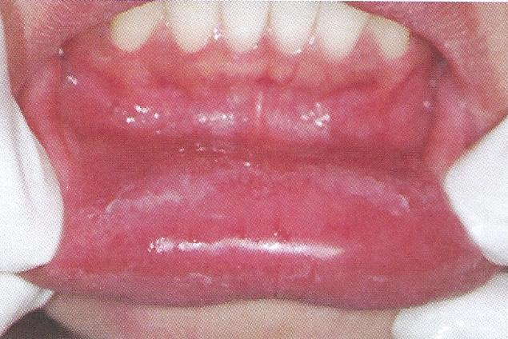

Allergic Contact Stomatitis

รอยอักเสบที่ริมฝีปากจากการแพ้สารเคมี
สาเหตุ การแพ้ยาสีฟัน น้ำยาบ้วนปาก หรือสารเคมีที่ใช้ทางทันตกรรม ลักษณะทางคลินิก เป็นรอยแดงปนขาวจากการหลุดลอกของเยื่อบุผิว เหงือกอักเสบแดง
การวินิจฉัย จากการซักประวัติร่วมกับทำ skin patch test